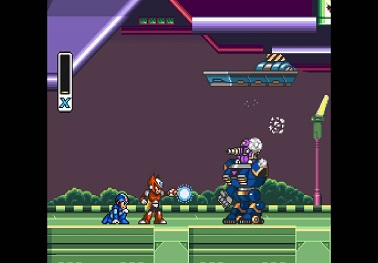
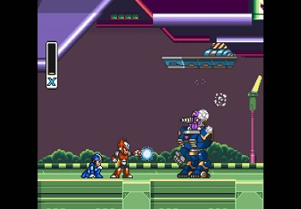
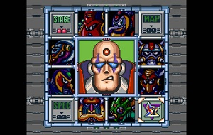
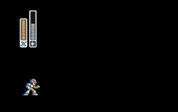

My Favorite Game
Story The Mavericks Weapons UpgradesHi I'm Kwasi and I wanted to write about my favorite game, Mega Man X. I hope you enjoy your time in this page.
Mega Man X originally released for the Super Famicom in Japan, 1993.
 

Listen to the Mega Man X Music
Story
This game is about X (the protagonist) and his friend, Zero. These robots are reploids. Reploids are robots that can think, feel for themselves and have free will like humans.
X and Zero are Maverick Hunters and their duty is to defeat any Maverick that they encounter in their journey.
Mavericks were former reploids, infected by a computer virus called "Maverick Virus."
The main antagonist is Sigma. A former reploid that was the leader of the Maverick Hunters but turned Maverick.
The Mavericks
In Mega Man X, you can choose which Maverick you want to fight first.
Once you defeat all Mavericks, you can enter the Fortress Stages and in the end you will fight Sigma himself.
- Chill Penguin
- Storm Eagle
- Flame Mammoth
- Spark Mandrill
- Armored Armadillo
- Boomer Kuwanger
- Launch Octopus
- Sting Chameleon
Weapons
When you defeat a Maverick, you gain a new weapon that can be used.
All of the mavericks are weak to a specific weapon in the game. eg. Spark Mandrill freezes when you shoot Shotgun Ice at him.
- Shotgun Ice
- Storm Tornado
- Fire Wave
- Electric Spark
- Rolling Shield
- Homing Torpedo
- Boomerang Cutter
- Chameleon Sting
Upgrades
Heart Tanks - These slightly increases X's life bar.
Energy Tanks -These tanks contain life energy that restores X's health. There is four of them in this game.
Armor Upgrades - These armor upgrades improve X's mobility, strength and resistance. There are four of them.
Hadouken - The most powerful move in the game, this can defeat all bosses in 1-2 hits.